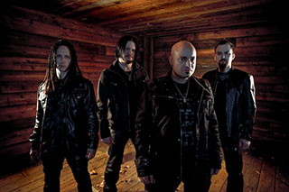

This site has been created as part of a school project and does not represent a real company or organization.
Featured Artist: Disturbed

Disturbed is an American heavy metal band from Chicago, Illinois, formed in 1994. The band includes vocalist David Draiman, bassist John Moyer, guitarist Dan Donegan, and drummer Mike Wengren. Former band members are vocalist Erich Awalt and bassist Steve Kmak.
The band has released six studio albums, five of which have consecutively debuted at number one on the Billboard 200.[1] Disturbed went into hiatus in October 2011, during which the band's members focused on various side projects, and returned in June 2015, releasing their first album in five years, Immortalized, on August 21, 2015.
Be sure to visit the Millard Music Shop and take advantage of their internet coupon for $2.00 off on any Disturbed CDs. Just click on the coupon to bring up a printable coupon page.